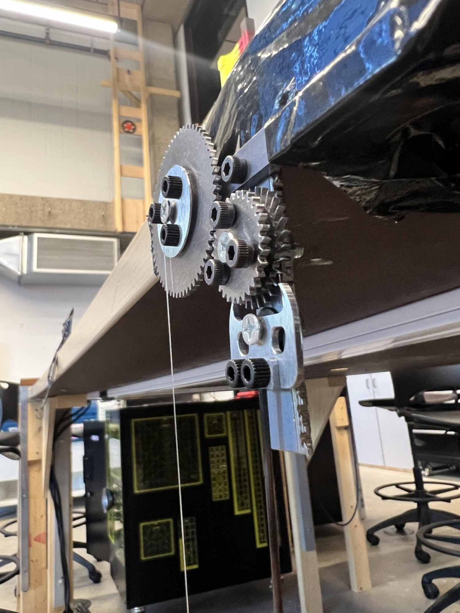

An escapement is the part of a clock that turns steady stored energy into a controlled, periodic tick — it's what you're hearing in most grandfather clocks. Mine is driven by gravity, with a weight on a fishing string providing the energy, and regulated by a pendulum.

The part that actually matters is the interaction between the escape wheel and the arm: the wheel is only allowed to turn exactly one tooth every time the pendulum completes a full period. Get that geometry wrong and the whole mechanism drifts or skips.
From Chipboard To A Working Clock
I started with just the two components that had to work together — the escape wheel and the arm — and laser cut the first prototype out of chipboard and acrylic to test the interaction cheaply. Once that worked, I added a gear and pulley system so it functioned more like an actual clock, plus a clamp to hold a carbon fiber dowel rod as the pendulum.
Before committing to milling the whole thing, I 3D printed a scaled-down version to confirm the design actually worked at speed. The video below shows the full run of iterations — laser cut, 3D printed, and finally CNC milled.